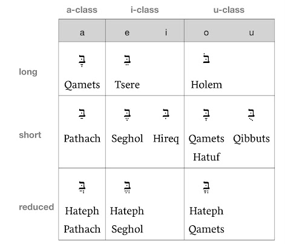

Hebrew Vocabulary
Note: For my subscribers. I really just needed this highly accessible for myself for study. However, maybe you’ll have some fun learning about the Hebrew Language. I may update this page with more Vocabulary later. Shalom.
|
Hebrew Alphabet (Print & Cursive), on Amazon |
{kind=link}
|
 |
|
From the Basics of Biblical Hebrew Grammar by Pratico and Van Pelt, (get the workbook and textbook, they are separate). |
{kind=link}
Nouns – Family / Titles
|
Father |
×ָב |
Lord |
×ָדוֹן |
|
Mother |
×Öµ× |
Slave/Servant |
עֶ֫בֶד |
|
Brother |
×ָח |
Man |
×Ö´×™×©× |
|
Sister |
×ָחוֹת |
Men/People |
×Ö²× Ö¸×©Ö´××™× |
|
Son |
בֵּן |
Woman |
×ִשָּ××” |
|
Daughter |
בַּת |
Woman of/Wife of |
×ֵ֫שֶ×ת |
|
Fathers |
×ָבוֹת |
Women |
× Ö¸×©Ö´××™× |
|
Mothers |
×ִמָּהוֹת |
Humankind |
×Ö¸×“Ö¸× |
|
Daughters |
×‘Ö¸Ö¼× ×•Ö¹×ª |
Ground/Dirt |
×ֲדָמָה |
|
Sons |
×‘Ö¸Ö¼× Ö´×™× |
Child/Boy |
יֶ֫לֶד |
|
Family/Clan |
מִשְ×פָּחָה |
Boy |
× Ö·Ö«×¢Ö·×¨ |
|
People |
×¢Ö·× / ×¢Ö·×žÖ´Ö¼×™× |
Girl |
× Ö·×¢Ö²×¨Ö¸×” |
Nouns – People - Names
|
Abraham |
×Ö·×‘Ö°×¨Ö¸×”Ö¸× |
Yahweh, the Lord |
יהוה |
|
Aaron |
×ַהֲרֹן |
Joseph |
יוֹסֵף |
|
David |
דָּוִד |
Jacob |
יַעֲקֹב |
|
Judah |
יְהוּדָה |
Isaac |
יִצְחָק |
|
Joshua |
יְהוֹש×וּעַ |
Jerusalem |
יְרוּשָ×לַ×Ö´ |
|
Jeremiah |
יִרְמְיָהוּ |
Jerusalem |
יְרוּשָ××œÖ·Ö«×™Ö´× |
|
Israel |
יִשְׂרָ×ֵל |
Canaan |
×›Ö°Ö¼× Ö·×¢Ö·×Ÿ |
|
Moses |
מֹשֶ××” |
Egypt |
×žÖ´×¦Ö°×¨Ö·Ö«×™Ö´× |
|
Esau |
עֵשָׂו |
Pharaoh |
פַּרְעֹה |
|
Zion |
צִיּוֹן |
Saul |
שָ××וּל |
|
|
|
Solomon |
שְ×לֹמֹה |
|
|
|
Samuel |
שְ×מוּ×ֵל |
Nouns – Places / Locations / Geographical Descriptions
|
Land/Earth |
×ֶ֫רֶץ |
Eye/Spring |
עַ֫יִן |
|
Ground/Dirt |
×ֲדָמָה |
City |
עִיר |
|
Skies (Heavens) |
שָ××žÖ·Ö«×™Ö´× |
Cities |
×¢Ö¸×¨Ö´×™× |
|
Clouds |
×¢Ö¸× Ö¸×Ÿ |
House |
בַּ֫יִת |
|
Water |
×žÖ·Ö«×™Ö´× / מֵי |
Houses |
×‘Ö¸Ö¼Ö½×ªÖ´Ö¼×™× |
|
Sea |
×™Ö¸× |
Place |
×žÖ¸×§×•Ö¹× |
|
Wilderness |
מִדְבָּר |
Nation |
גּוֹי |
|
Field |
שָׂדֶה |
Way/Road |
דֶּ֫רֶךְ |
|
Border |
גְּבוּל |
Mountain |
הַר |
|
To the land |
×ֶל־הָ×ָ֫רֶץ |
Fire |
×Öµ×©× |
|
To (the) land |
×ַ֫רְצָה |
north, northern |
צָפוֹן |
|
Tree/Wood |
×¢Öµ×¥ |
|
|
Nouns – Time Designations
|
Day |
×™×•Ö¹× |
Time |
עֵת |
|
Days |
×™Ö¸×žÖ´×™× |
Month/New Moon |
×—Ö¹Ö«×“Ö¶×©× |
|
Night |
לַ֫יְלָה |
Morning |
בֹּ֫קֶר |
|
Year |
שָ×× Ö¸×” |
life, lifetime |
×—Ö·×™Ö´Ö¼×™× |
|
|
|
|
|
|
|
|
|
|
Nouns – Things
|
House |
בַּ֫יִת |
Word/Thing |
דָּבָר |
|
Horse |
סוּס |
Gold |
זָהָב |
|
Book |
סֵ֫פֶר |
Silver |
כֶּ֫סֶף |
|
Flock (of sheep/goats) |
צ×ֹן |
Staff/Rod/Tribe |
מַטֶּה |
|
Stone |
×ֶ֫בֶן |
|
|
|
Vessel |
כְּלִי |
|
|
|
Bread/Food |
×œÖ¶Ö«×—Ö¶× |
Sword |
חֶ֫רֶב |
|
Cattle |
בָּקָר |
|
|
|
ram |
×ַ֫יִל |
|
|
|
|
|
|
|
|
|
|
|
|
|
|
|
|
|
Nouns – Body Imagery
|
Voice |
קוֹל |
Nose/Nostril |
×Ö·×£ |
|
Head |
רֹ××©× |
ear |
×ֹ֫זֶן |
|
Name/Reputation |
שֵ×× |
hand, palm, sole of the foot |
×›Ö·Ö¼×£ |
|
Heart |
לֵב |
mouth, opening; |
פֶּה |
|
Soul/Life/Throat |
× Ö¶Ö«×¤Ö¶×©× |
friend, |
רֵעַ |
|
Hand/Power (metaphorically) |
יָד |
|
|
|
Foot |
רֶ֫גֶל |
|
|
|
Flesh/Meat |
בָּשָׂר |
|
|
|
Mouth |
פֶּה |
|
|
|
|
|
|
|
|
|
|
|
|
|
|
|
|
|
Nouns – Kings, Kingdoms, Royalty, Etc.
|
King |
מֶ֫לֶךְ |
Army/Host |
×¦Ö¸×‘Ö¸× |
|
|
|
Armies |
צְבָ×וֹת |
|
|
|
Instructions/Law |
תּוֹרָה |
|
Ruler |
שַׂר |
Judgment |
מִשְ×פָּט |
|
Gate |
שַ×֫עַר |
Announcement |
× Ö°×Ö»× |
|
War/Battle |
מִלְחָמָה |
Covenant |
בְּרִית |
|
|
|
Strength/Wealth |
חַ֫יִל |
|
|
|
Loyalty |
חֶ֫סֶד |
|
|
|
Enemy |
×ֹיֵב |
|
|
|
|
|
|
|
|
|
|
|
|
|
|
|
Nouns – Divinity and the Divine / Good vs Evil / Holiness
|
Yahweh, the Lord |
יהוה |
|
|
|
God |
×ֵל |
Lord of Hosts |
יְהוָה צְבָ×וֹת |
|
gods |
×Ö±×œÖ¹×”Ö´×™× |
Instructions/Law |
תּוֹרָה |
|
Spirit/Breath/Wind |
רוּחַ |
Forever/Eternity |
×¢×•Ö¹×œÖ¸× |
|
Soul/Life/Throat |
× Ö¶Ö«×¤Ö¶×©× |
Altar |
מִזְבֵּחַ |
|
Covenant |
בְּרִית |
Prophet |
× Ö¸×‘Ö´×™× |
|
Holiness |
×§Ö¹Ö«×“Ö¶×©× |
Priest |
כֹּהֵן |
|
Wise (skillful) |
×—Ö¸×›Ö¸× |
Temple |
הֵיכָל |
|
Good/Pleasant |
טוֹב |
Whole Burnt Offering |
עֹלָה |
|
Upright |
יָשָ×ר |
Death/Dying |
מָ֫וֶת |
|
|
|
Evil |
רָעָה |
|
Blessing/Gift |
בְּרָכָה |
Bad |
רַע (רָע) |
|
Sin |
חַטָּ×ת |
Wicked |
רָשָ××¢ |
|
Glory |
כָּבוֹד |
Commandment |
מִצְוָה |
|
Righteous |
צַדִּיק |
sacrifice |
זֶ֫בַח |
|
Holy/Set apart |
×§Ö¸×“×•Ö¹×©× |
righteousness |
צְדָקָה |
Nouns (?) Transition Statements
|
THE |
×”Ö· Ö¼ |
If |
×Ö´× |
|
And/but/also |
וְ |
But/Except |
×›Ö´Ö¼×™Ö¾×Ö´× |
|
Or |
×וֹ |
only, surely, nevertheless |
×ַךְ |
|
Is Not / Are Not / Nothing |
×ַ֫יִן |
(neg particle) no, not |
×ַל |
|
Also/Even |
×’Ö·Ö¼× |
(poetic) no, never |
בַּל |
|
Behold/If |
הֵן |
(neg particle) no, not |
×œÖ¹× |
|
Behold/Look |
×”Ö´× ÖµÖ¼×” |
now, after all, at last |
עַתַָּה |
|
There is/There are |
×™Öµ×©× |
continually |
תָּמִיד |
|
Alone/By Oneself |
לְבַד |
thus, here |
×›Ö¹Ö¼×” |
|
Around/About |
סָבִיב |
so, thus |
כֵּן |
|
then, since |
×ָז |
again, still, as long as |
עוֹד |
|
also, indeed, even |
×Ö·×£ |
here |
פֹּה |
|
lest, otherwise |
פֶּן־ |
only |
רַק |
|
|
|
opposite, in front of |
× Ö¶Ö«×’Ö¶×“ |
|
|
|
there, then, at that time |
שָ×× |
|
|
|
|
|
Nouns (?) Descriptors
|
Good (ms) |
טוֹב |
Old (Elder) |
זָקֵן |
|
Good (fs) |
טוֹבָה |
Small/Young |
קָטֹן |
|
Good (mp) |
×˜×•Ö¹×‘Ö´×™× |
Near/Close |
קָרוֹב |
|
Good (fp) |
טוֹבוֹת |
Far (distant) |
רָחוֹק |
|
Little/Few |
מְעַט |
Great/Many |
רַב / ×¨Ö·×‘Ö´Ö¼×™× |
|
mighty, valiant, heroic |
גִּבּוֹר |
Great/Big/Large |
גָּדוֹל |
|
|
|
Foreign/Strange |
זָר |
|
|
|
Living |
×—Ö·×™ |
|
|
|
|
|
|
|
|
|
|
|
|
|
|
|
|
|
|
|
|
Adjectives
|
What |
מָה |
After/Behind |
×ַחֲרֵי / ×ַחַר |
|
Who, Which, That |
×©Ö¶× |
To/Toward/Into |
×ֶל־ / ×ֵלָיו |
|
Why |
לָמָה or לָ֫מָּה |
With (or) Direct Object Marker |
×ֵת ×ֶת־ |
|
Why |
מַדּוּעַ |
In the midst of/inside |
בְּתוֹךְ |
|
Who |
מִי |
For the sake of |
לְמַ֫עַן |
|
Who/That/Which |
×ֲשֶ×ר |
|
|
|
Because/But/Except |
×›Ö´Ö¼×™ |
From upon |
מֵעַל |
|
Except/But |
×›Ö´Ö¼×™Ö¾×Ö´× |
From under |
מִתַּ֫חַת |
|
Above/Upward/On top of |
מַ֫עַל |
From with |
מֵ×ֵת |
|
Beyond/Other Side |
עֵ֫בֶר |
On account of |
עַל־דְּבַר |
|
Until |
עַד |
In the midst of |
בְּתוֹךְ |
|
On/Upon/Account of |
עַל |
From the midst of |
מִתּוֹךְ |
|
With/Together with |
×¢Ö´× |
In the midst of |
בְּקֶ֫רֶב |
|
Face/Front |
×¤Ö¸Ö¼× Ö´×™× |
From the midst of |
מִקֶּ֫רֶב |
|
Under/Below |
תַּ֫חַת |
Other/Another |
/ ×ַחֶ֫רֶת ×ַחֵר |
|
All/Each/Every |
כֹּל |
|
|
|
Before/in the presence of |
×œÖ´×¤Ö°× Öµ×™ |
|
|
|
Away from/out from the presence of |
×žÖ´×¤Ö°Ö¼× Öµ×™ / ×žÖ´×œÖ´Ö¼×¤Ö°× Öµ×™ |
As/Like/According to |
×›Ö°Ö¼ |
|
Middle/Center |
תוֹךְ |
To, Toward, For |
לְ |
|
In the face of/in the sight of |
×¢Ö·×œÖ¾×¤Ö°Ö¼× Öµ×™ |
In (At, With, By, Against) |
בְּ |
|
Very/Exceedingly |
מְ×ֹד |
Between |
בֵּין |
|
|
|
From/out of |
מִן / · מִ |
|
|
|
|
|
|
|
|
|
|
|
|
|
|
|
|
|
|
|
|
Numbers
|
One |
×ֶחָד |
First |
רִ×ש×וֹן |
|
Two |
שְ×× Ö·Ö«×™Ö´× ×©Ö°××ªÖ·Ö¼Ö«×™Ö´× |
Second |
שֵ×× Ö´×™ |
|
Three
|
שָ××œÖ¹×©× |
Third |
שְ×לִישִ××™ |
|
Four |
×ַרְבַּע |
|
|
|
Five |
×—Ö¸×žÖµ×©× |
|
|
|
Six |
שֵ××©× |
|
|
|
Seven |
שֶ×֫בַע |
Seventh |
שְ×בִיעִי |
|
Eight |
שְ××žÖ¹× Ö¶×” |
|
|
|
Nine |
תֵּ֫שַ××¢ |
|
|
|
Ten |
עָשָׂר |
|
|
|
Hundred |
מֵ×ָה |
|
|
|
Thousand |
×ֶ֫לֶף |
|
|
|
Two Thousand |
×Ö·×œÖ°×¤Ö·Ö¼Ö«×™Ö´× |
|
|
|
|
|
Cubit |
×ַמָּה |
|
|
|
Length |
×ֹ֫רֶךְ |
|
|
|
Half |
חֲצִי |
|
|
|
Width/Breadth |
רֹחַב |
Pronouns & Pronominal Suffixes
|
Translation |
Type 1 |
Type 2 |
|
|
his (its)/him (it) 3ms |
וֹ |
ָיו |
סוּסוֹ |
|
her (its)/her (it) 3fs |
ָהּ |
Ö¶Ö«×™×”Ö¸ |
סוּסָהּ |
|
your/you 2ms |
ךָ |
ֶ֫יךָ |
סוּסְךָ |
|
your/you 2fs |
ךְ |
ַ֫יִךְ |
סוּסֵךְ |
|
my/me 1cs |
Ö´×™ |
Ö·×™ |
סוּסִי |
|
their/them 3mp |
×”Ö¶× |
Öµ×™×”Ö¶× |
×¡×•Ö¼×¡Ö¸× |
|
their/them 3fp |
הֶן |
ֵיהֶן |
סוּסָן |
|
your/you 2mp |
×›Ö¶× |
Öµ×™×›Ö¶× |
×¡×•Ö¼×¡Ö°×›Ö¶× |
|
your/you 2fp |
כֶן |
ֵיכֶן |
סוּסְכֶן |
|
our/us 1cp |
× ×•Ö¼ |
ÖµÖ«×™× ×•Ö¼ |
×¡×•Ö¼×¡ÖµÖ«× ×•Ö¼ |
|
He/It (3ms) |
×”×•Ö¼× |
This (ms) |
זֶה |
|
She/It (3fs) |
הִו×, ×”Ö´×™× |
This (fs) |
×–Ö¹×ת |
|
You (2ms) |
×ַתָּה |
That (ms) |
×”×•Ö¼× |
|
You (2fs) |
×ַתְּ |
That (fs) |
×”Ö´×™× |
|
I (1cs) |
×Ö¸× Ö¹×›Ö´×™, ×Ö²× Ö´×™ |
|
|
|
|
|
These (mp)/(fp) |
×ֵ֫לֶּה |
|
They (3mp) |
הֵ֫מָּה, ×”Öµ× |
Those (mp) |
הֵ֫מָּה, ×”Öµ× |
|
They (3fp) |
×”ÖµÖ«× Ö¸Ö¼×”, הֵן |
Those (fp) |
×”ÖµÖ«× Ö¸Ö¼×”, הֵן |
|
You (2mp) |
×Ö·×ªÖ¶Ö¼× |
|
|
|
You (2fp) |
×Ö·×ªÖµÖ¼Ö«× Ö¸×” |
|
|
|
We (1cp) |
×Ö²× Ö·Ö«×—Ö°× ×•Ö¼ |
|
|
Verbs: Qal Perfect Paradigms
|
|
Strong |
I-G |
II-G |
III-He/Chet/Ayin |
|
3ms |
קָטַל |
עָמַד |
בָּחַר |
שָ×מַע |
|
3fs |
קָֽטְלָה |
עָֽמְדָה |
בָּֽחֲרָה |
שָֽ×מְעָה |
|
2ms |
קָטַ֫לְתָּ |
עָמַ֫דְתָּ |
בָּחַ֫רְתָּ |
שָ×מַ֫עְתָּ |
|
2fs |
קָטַלְתְּ |
עָמַדְתְּ |
בָּחַרְתְּ |
שָ×מַ֫עַתְּ |
|
1cs |
קָטַ֫לְתִּי |
עָמַ֫דְתִּי |
בָּחַ֫רְתִּי |
שָ×מַ֫עְתִּי |
|
|
|
|
|
|
|
3cp |
קָטַ֫לְתִּי |
עָֽמְדוּ |
בָּֽחֲרוּ |
שָֽ×מְעוּ |
|
2mp |
×§Ö°×˜Ö·×œÖ°×ªÖ¶Ö¼× |
×¢Ö²×žÖ·×“Ö°×ªÖ¶Ö¼× |
×‘Ö°Ö¼×—Ö·×¨Ö°×ªÖ¶Ö¼× |
שְ××žÖ·×¢Ö°×ªÖ¶Ö¼× |
|
2fp |
קְטַלְתֶּן |
עֲמַדְתֶּן |
בְּחַרְתֶּן |
שְ×מַעְתֶּן |
|
1cp |
×§Ö¸×˜Ö·Ö«×œÖ°× ×•Ö¼ |
×¢Ö¸×žÖ·Ö«×“Ö°× ×•Ö¼ |
×‘Ö¸Ö¼×—Ö·Ö«×¨Ö°× ×•Ö¼ |
שָ××žÖ·Ö«×¢Ö°× ×•Ö¼ |
Verbs: Qal Imperfect Paradigms
|
|
Strong |
TBC |
TBC |
TBC |
|
3ms |
יִקְטֹל |
|
|
|
|
3fs |
תִּקְטֹל |
|
|
|
|
2ms |
תִּקְטֹל |
|
|
|
|
2fs |
תִּקְטְלִי |
|
|
|
|
1cs |
×ֶקְטֹל |
|
|
|
|
3mp |
יִקְטְלוּ |
|
|
|
|
3fp |
×ªÖ´Ö¼×§Ö°×˜Ö¹Ö«×œÖ°× Ö¸×” |
|
|
|
|
2mp |
תִּקְטְלוּ |
|
|
|
|
2fp |
×ªÖ´Ö¼×§Ö°×˜Ö¹Ö«×œÖ°× Ö¸×” |
|
|
|
|
1cp |
× Ö´×§Ö°×˜Ö¹×œ |
|
|
|
Verbs
|
to eat |
×ָכַל |
to sit (down) |
יָשַ×ב |
|
to say |
×ָמַר |
to draw near |
× Ö¸×’Ö·×©× |
|
to be |
הָיָה |
to give |
× Ö¸×ªÖ·×Ÿ |
|
to walk |
הָלַךְ |
to do, make |
עָשָׂה |
|
to go or come out |
×™Ö¸×¦Ö¸× |
to see, perceive |
רָ×ָה |
|
blessed |
בָּרַךְ |
to hear |
שָ×מַע |
|
to be(come) strong, have courage |
חָזַק |
to remember |
זָכַר |
|
to be heavy, weighty, honored |
כָּבֵד |
to know, know sexually |
יָדַע |
|
to be full |
×žÖ¸×œÖµ× |
to write (upon) |
כָּתַב |
|
to rule (as king/queen) |
מָלַךְ |
to find (out) |
×žÖ¸×¦Ö¸× |
|
to lie down |
שָ×כַב |
pay attention |
פָּקַד |
|
to send, stretch |
שָ×לַח |
to watch (over), guard |
שָ×מַר |
|
bear (children) |
יָלַד |
enter |
×‘Ö¼×•Ö¹× |
|
to fear |
×™Ö¸×¨Öµ× |
to build |
×‘Ö¸Ö¼× Ö¸×” |
|
to go down |
יָרַד |
to take |
לָקַח |
|
to die |
מוּת |
to fall |
× Ö¸×¤Ö·×œ |
|
to pass over |
עָבַר |
to lift, carry |
× Ö¸×©Ö¸×‚× |
|
to go up |
עָלָה |
to stand |
עָמַד |
|
to call |
×§Ö¸×¨Ö¸× |
to rise |
×§×•Ö¼× |
|
to live |
חָיָה |
put |
×©Ö´×‚×™× |
|
to be able |
יָכֹל |
return |
ש×וּב |
|
to turn (aside) |
סוּר |
to cut, cut off |
כָּרַת |
|
redeem |
×’Ö¸Ö¼×ַל |
to work |
עָבַד |
|
to miss (a goal or mark), sin |
×—Ö¸×˜Ö¸× |
to answer, respond |
×¢Ö¸× Ö¸×” |
|
to add, continue (to do something again) |
יָסַף |
To approach, draw near, come near
|
קָרַב |
|
to inherit, |
×™Ö¸×¨Ö·×©× |
to be(come) numerous |
רָבָה |
|
to spread out, |
כָּפַר |
to drink |
שָ×תָה |
|
to leave, |
עָזַב |
|
|
|
|
|
|
|
|
|
|
|
|
|
|
|
|
|
|
|
|
|
|
|
|
|
|
|
|
|
|
|
|
|
|
|
|
|
|
|
|
|
|
|
|
|
|
|
|
|
|
|
|
|
|
|
|
|
|
|
|
|
|